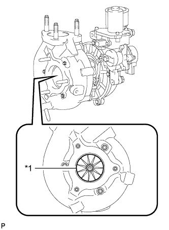
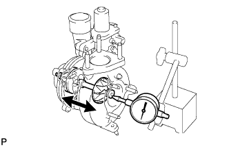
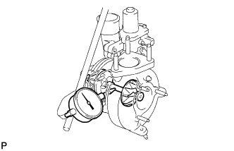
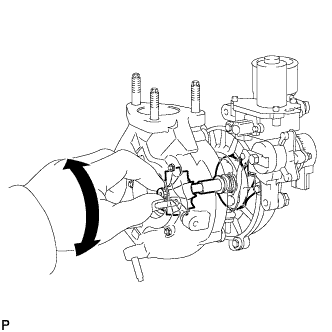

ВЫПУСКНОЙ КОЛЛЕКТОР С ТУРБОНАГНЕТАТЕЛЕМ (для моделей без DPF) > ПРОВЕРКА |
| 1. ВИЗУАЛЬНО ПРОВЕРЬТЕ ТУРБОНАГНЕТАТЕЛЬ В СБОРЕ |
|  |
Проверьте колесо турбины со стороны выпуска на наличие деформации и трещин.
| *1 | Колесо турбины |
| 2. ПРОВЕРЬТЕ ОСЕВОЙ ЛЮФТ ВАЛА ТУРБИНЫ |
Вставьте иглу индикатора часового типа со стороны выпуска вала турбины.
|  |
Переместите вал турбины в осевом направлении измерьте его осевой люфт.
| 3. ПРОВЕРЬТЕ РАДИАЛЬНЫЙ ЛЮФТ ВАЛА ТУРБИНЫ |
Вставьте иглу индикатора часового типа в отверстие для выпуска масла и установите ее в центре вала турбины.
|  |
Переместите вал турбины в радиальном направлении измерьте его радиальный люфт.
| 4. ПРОВЕРЬТЕ ВРАЩЕНИЕ ВАЛА ТУРБИНЫ |
|  |
Поверните колесо турбины со стороны выпуска пальцем и убедитесь, что оно вращается свободно.